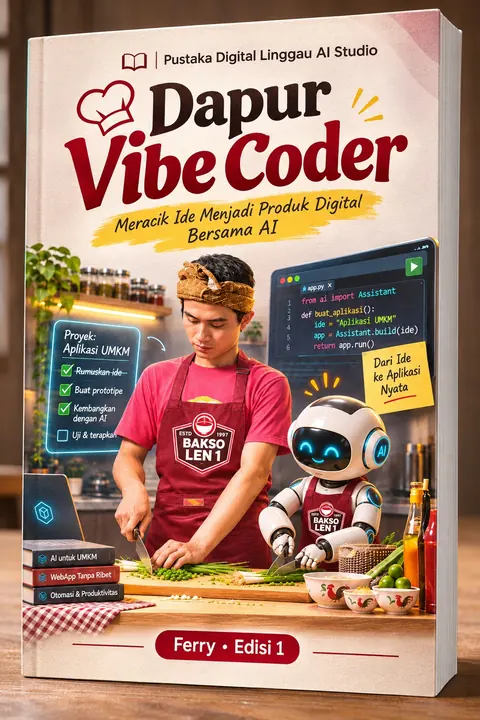

GratisBuku gratis, pengalaman nyata
Bacaan gratis dari Linggau AI Studio di Lubuklinggau, tentang memulai usaha kuliner, mengelola warung, dan membangun produk digital bersama AI.
Koleksi buku
Baca online atau simpan untuk dibaca nanti.


Komunitas Ngulik Digital
GratisBelajar · Chapter 1
Ikuti materi dasar bersama komunitas. Gratis Rp0, tanpa wajib menjadi member berbayar.
Rilis terbaru
Pekan berjalanInformasi pekan berjalan sedang dimuat.
Tidak ada jadwal terbit rutin yang dijanjikan.
Tentang pustaka
Catatan belajar Ferry dari pengalaman usaha kuliner dan pengembangan aplikasi bersama AI. Dapur Vibe Coder mengajak pembaca mengikuti pengalaman usaha dan belajar membangun produk digital bersama AI. Pengalaman nyata, ilustrasi, dan hal yang belum diuji dibedakan dengan jelas.
Rak ini belum selesai.